l’ampleur
200+
Coureurs chaque lundi
3
Pays : JP, US, FR
Nike, On, PSG
Marques partenaires
3 evenements organises
Juillet 2024 - Tokyo
On running Japan
Partis de zero contact au Japon, nous avons mobilise influenceurs et communautes de coureurs via Instagram pour organiser un run de rue dans Shibuya en soutien a la Track Night Tokyo de ON. Un vrai moment de street marketing dans l’un des quartiers les plus frequentes au monde, une participation a la ON Track Night pour attirer les coureurs japonais, et une soiree conclue par un DJ set dans un bar local. Du community building pur, monte de toutes pieces en 5 jours.


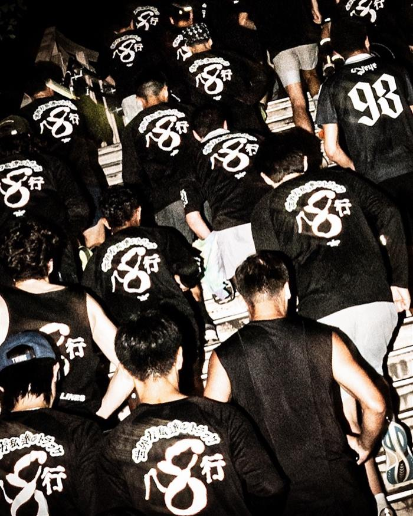
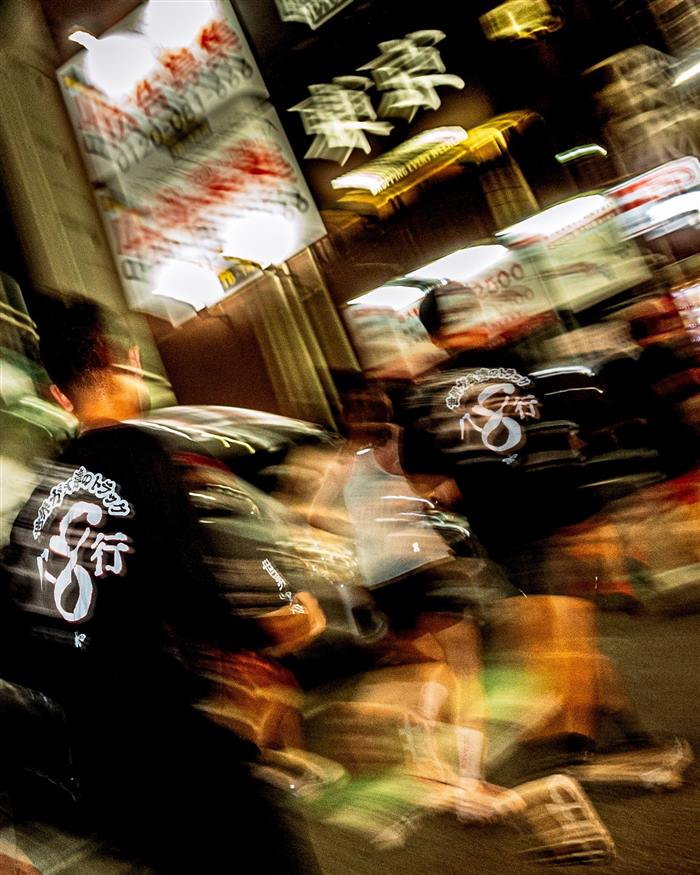

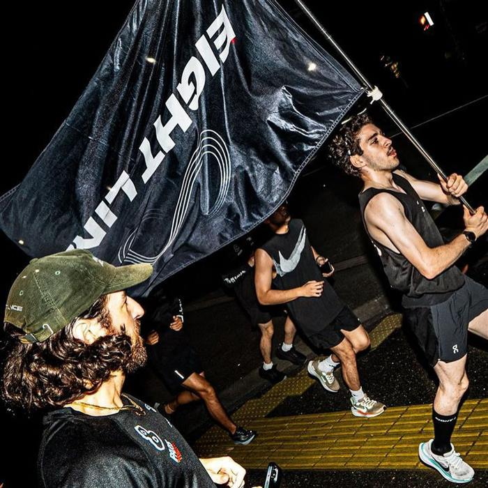
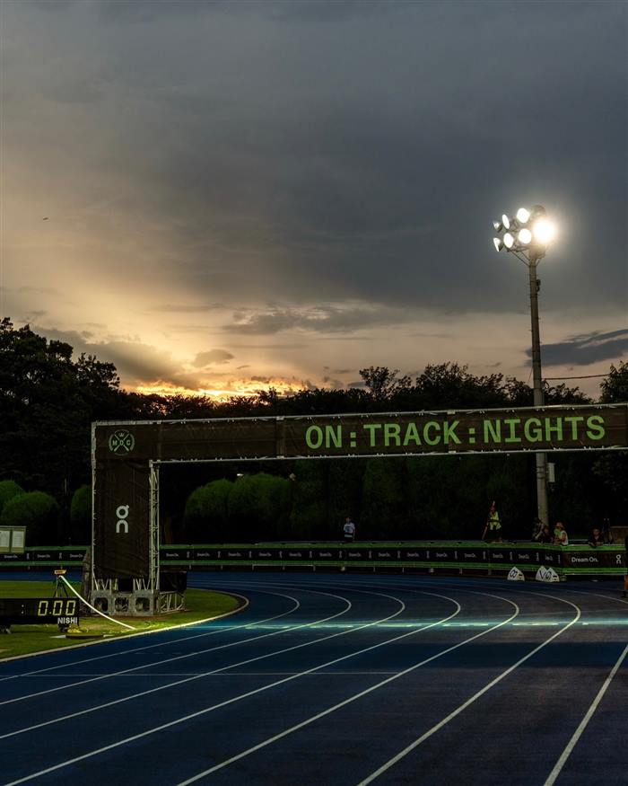

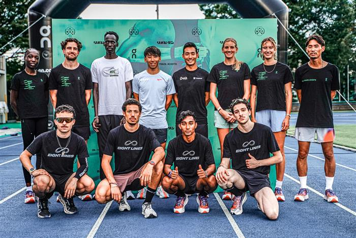
Juin 2026 - Los Angeles
Nike & PSG
A la suite d’un contrat de partenariat avec Nike, EightLines a collabore avec le PSG sur une ligne de vetements. Invites a la Maison du PSG a Los Angeles, nous avons organise un 5 km sur Hollywood Boulevard reunissant 70 personnes a 8h du matin, suivi d’un talk autour de nos valeurs. En amont, nous etions au siege de Nike a Portland pour des workshops marketing, ou nous avons partage notre vision de la culture running en Europe. Michael Gonda, Chief Communication Officer de Nike, est venu dans nos locaux parisiens un mois plus tard pour une session strategie.

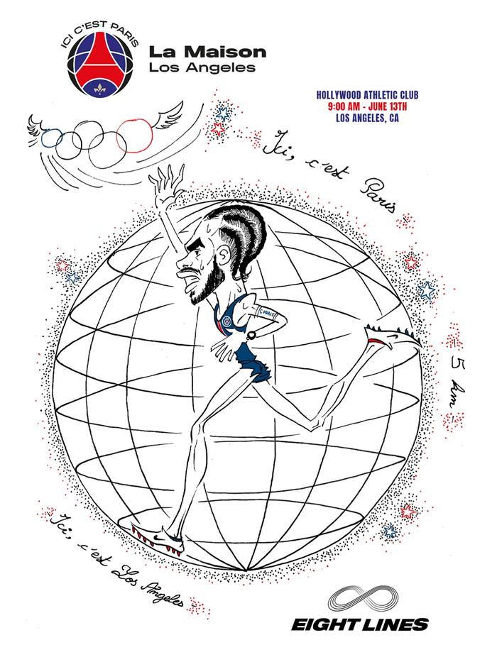
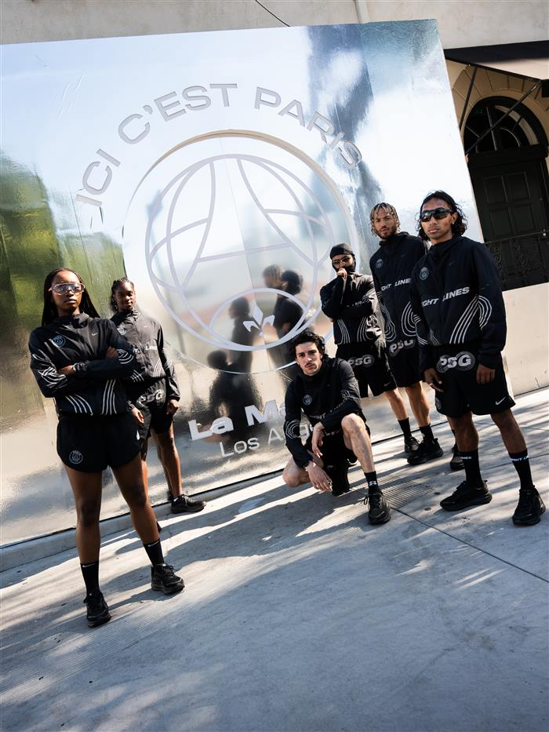
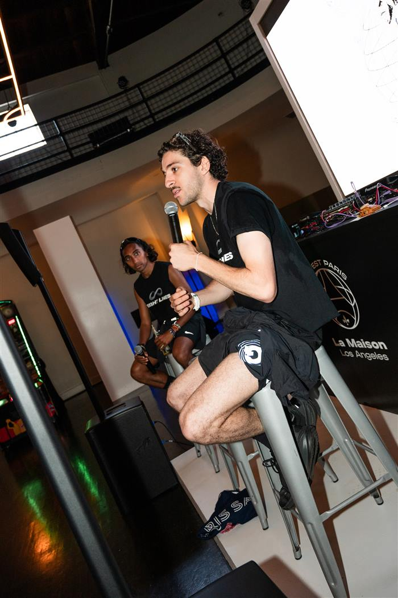
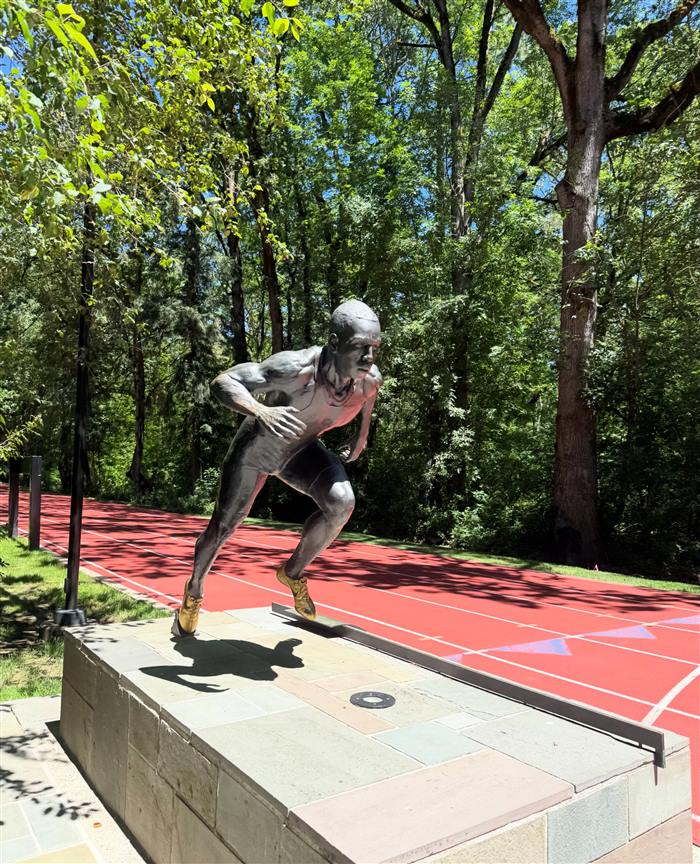

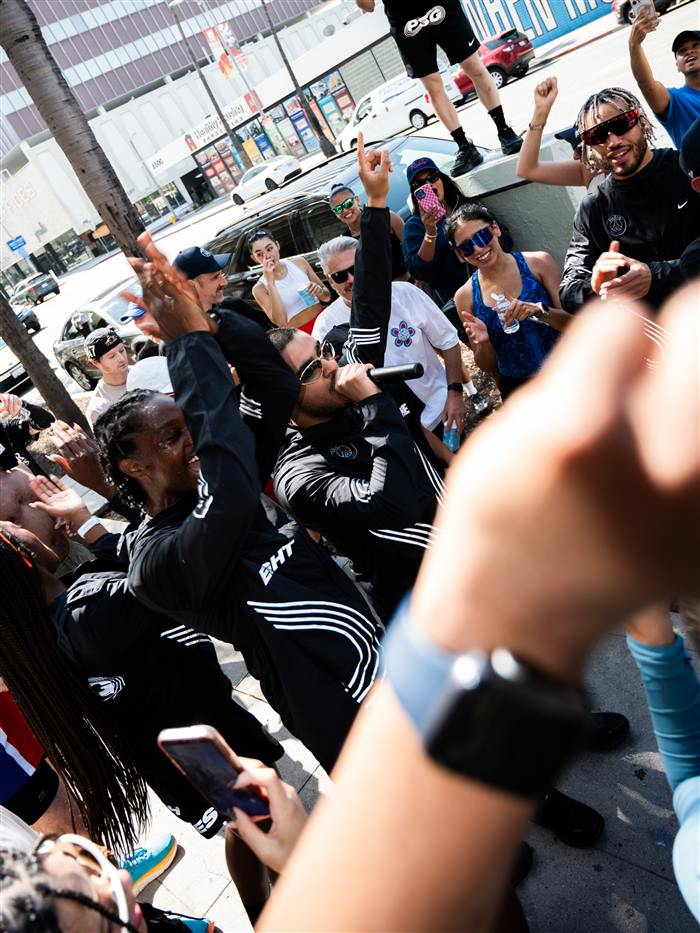

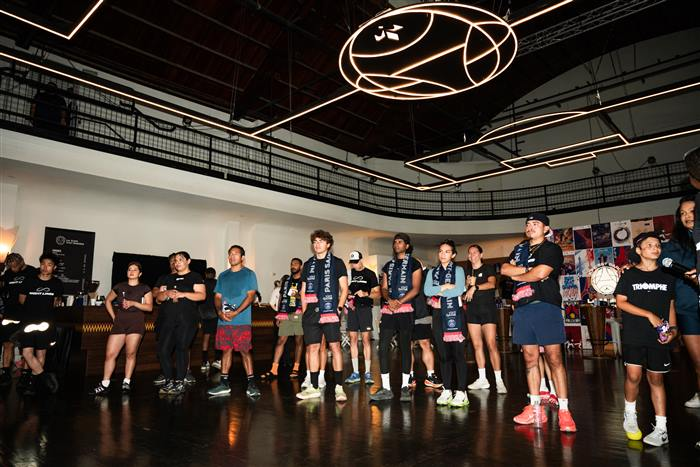
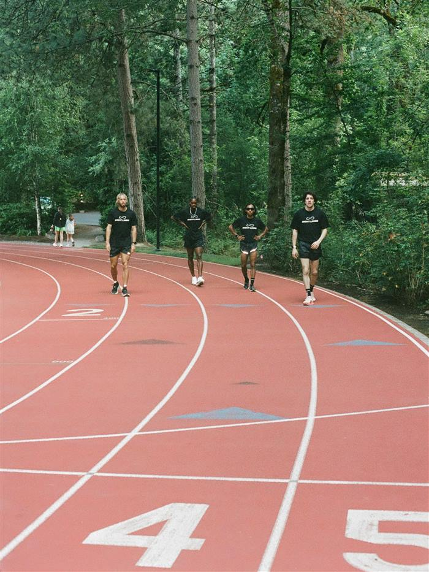
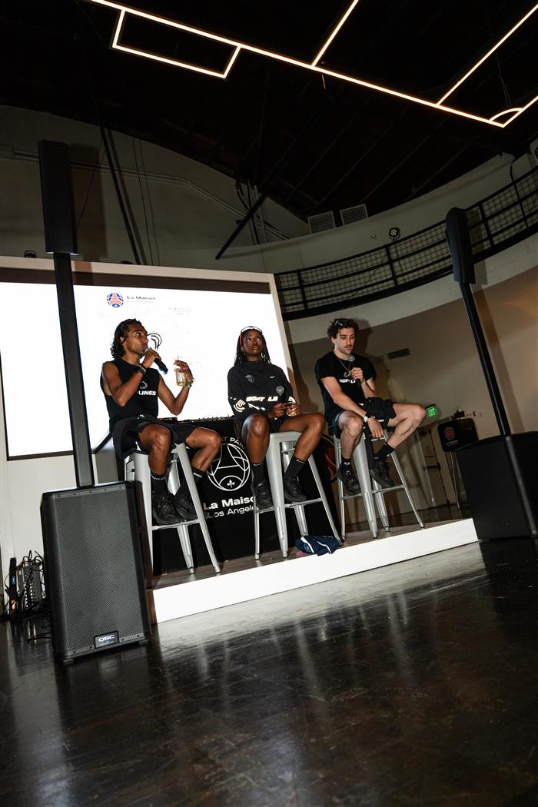

Mai 2025 - Paris
Latay
Un talk avec Latay, podcast sur la double culture franco-maghrebine, pour explorer comment l’identite culturelle faconne la performance sportive et comment religion et sport cohabitent au haut niveau. Organisee pendant le Ramadan, la soiree melait un talk enregistre, un 5 km dans Paris et un iftar prepare pour 100 personnes dans les locaux d’EightLines. Communaute, culture et sport en une seule soiree.

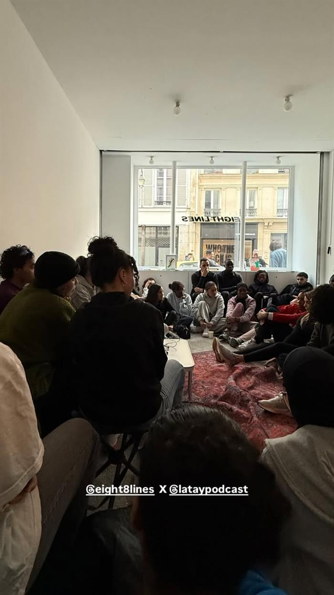

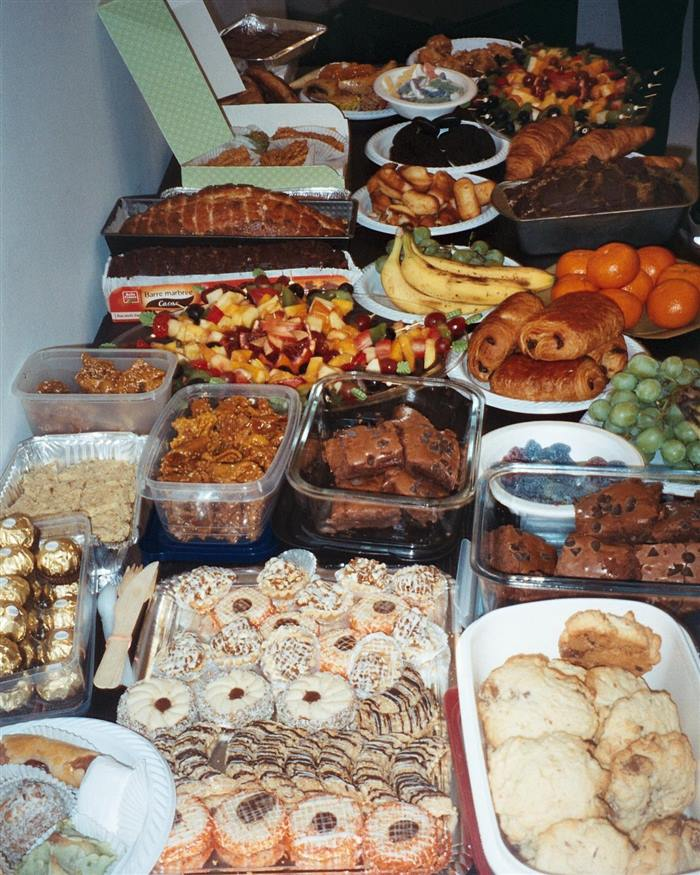